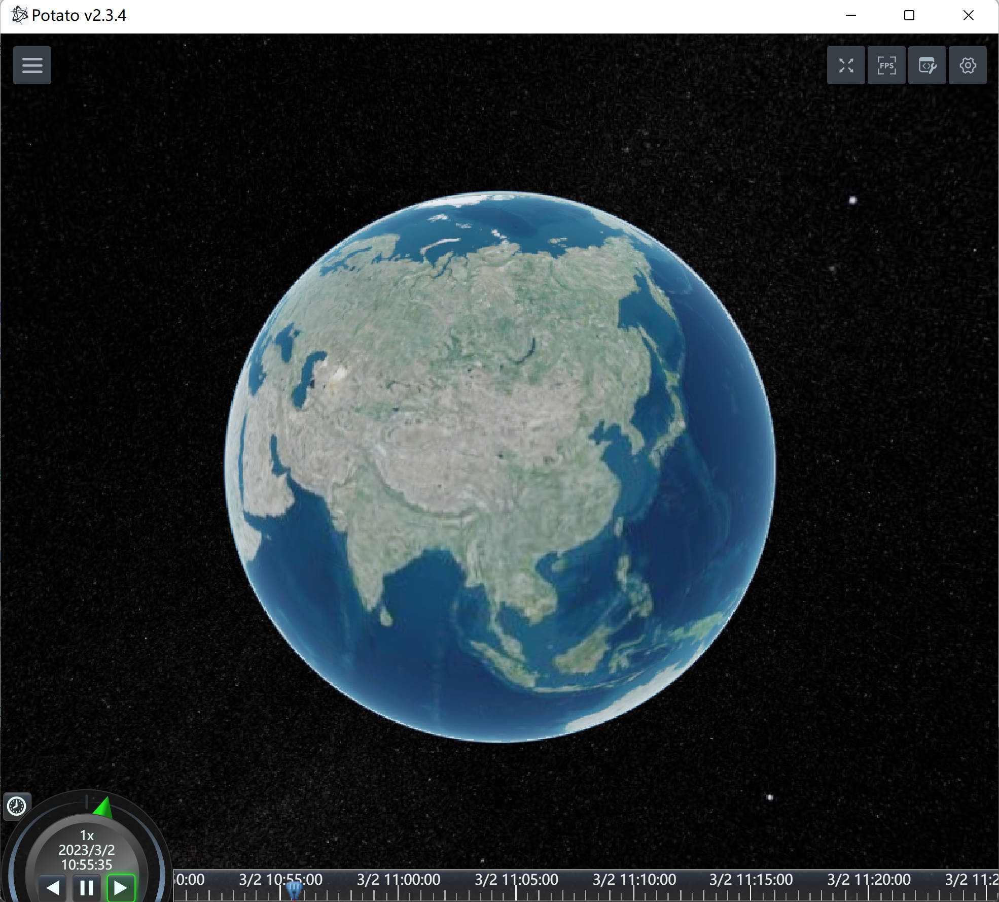
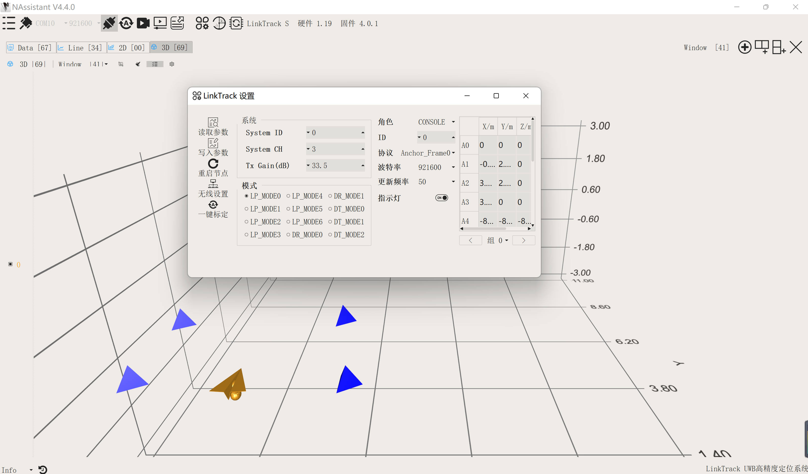
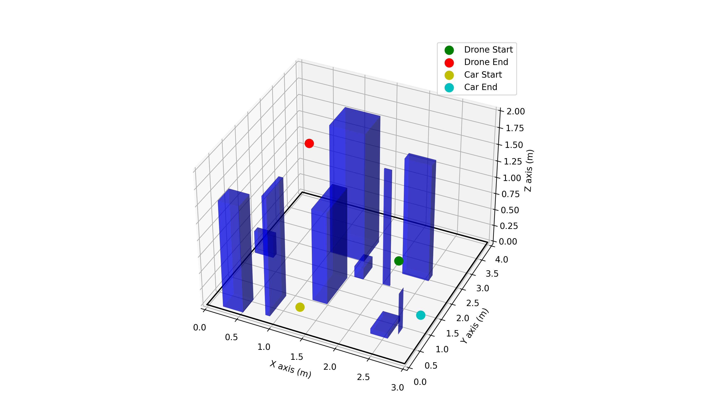

Research Class (Teaching Assistant)
Overview
This course aims to provide students with a good understanding of the principles and applications of robot path planning and control through simulations and experiments. Throughout the course, we utilize a laboratory-developed simulation platform for control and planning simulations. Subsequently, we conduct control and planning experiments using DJI's RoboMaster EP(UGV) and TT(UAV), along with indoor positioning using UWB devices from nooploop company. After students have learned the control and planning theories, they can deepen their understanding through simulations and physical experiments. The course consists of eight sessions: the first three sessions cover relevant theory presented by Assoc. Prof. HAN Liang, the following three sessions involve my instruction on simulation and physical experiments, and the final two sessions include the evaluation of simulation and experimental results.
Course Content
Theory Part
- Control theory: Assoc. Prof. HAN Liang explained linear systems, introduced modeling methods for first-order and second-order systems, discussed control principles based on feedback, and explained the principles of PID control.
- Path planning theory: Assoc. Prof. HAN Liang explained the problems that need to be addressed in path planning, which involve finding a collision-free path from point A to point B on a given map. Additionally, the teacher discussed some graph-based path planning algorithms, such as A*.
- Basic hardware knowledge: Assoc. Prof. HAN Liang explained the fundamental principles of multirotor drones and demonstrated using the DJI Robomaster TT(quadrotor) and its official app. The teacher explained how quadrotors can adjust their attitude by changing the rotational speed of their propellers. Assoc. Prof. HAN Liang also introduced the principles of a Mecanum wheel robot, demonstrating with the DJI RoboMaster EP Mecanum wheel robot and its official app.
- Basic software knowledge: I primarily introduced why we use and how we use Anaconda, as well as how to utilize PyCharm for Python development. In the classroom, I guided students in establishing a virtual environment called 'Research Class' for the development of simulations and experiments.
Simulation Part
Potato is a large-scale cluster simulation platform developed by our lab. To meet the needs of this class, we have developed a minimal example using the simulation platform display end as the GUI — potato-mini. Students can design and develop agent dynamics, add task environments, and perform control/planning algorithm simulations in potato-mini.

In Potato Central, there are three main components that students need to modify:
- Path Planning Algorithm: The path planning algorithm was developed by Chen Xuwen, mainly using the A* algorithm. Students need to modify and implement their own path planning algorithm. The main code is in
planning.py. - Path Design: I am responsible for the design of the planned path. In
central_demo.py, based on the given waypoints, I connect them as a path. Students need to modify and implement their own path design. - Control: I am responsible for the control part of the code. I designed a path tracking control algorithm based on vector field algorithm, mainly using a PID controller. The main part of the PID controller is in
controller.py.
Experiment Part
- UWB device: We utilize the LinkTrack product developed by nooploop company for positioning unmanned aerial vehicles (UAVs) and unmanned ground vehicles (UGVs). The Ultra-Wideband (UWB) equipment used in this course requires the use of base stations, a console, and tags.

- Robomaster TT: We utilize the DJI Robomaster TT for our experiments. I set the drone to network mode, allowing it to connect to the router. Based on prior map information, we can initially plan a collision-free path. Then, using UWB, we locate the drone's position and compute the drone's control input through a control algorithm.
- Robomaster EP: Similarly, I set the EP to network mode. Based on prior map information, we can initially plan a collision-free path. Then, using UWB, we locate the EP's position and compute the EP's control input through a control algorithm.
- Map design: I designed a 4m×3m map, which can be simulated in Potato and also verified in experiments. The map contains some random obstacles. The drone and the unmanned vehicle need to navigate around these obstacles to reach the target point.

Results
The students completed both the simulation and experiments, enhancing their hands-on and coding abilities, and deepening their understanding of control and planning algorithms.
My Role
Initially, I completed all the simulation and experiments, and organized the related steps and knowledge into a document, which I then explained to the students in class. I was also responsible for the preparation of the course, including preparing hardware devices and course materials. Additionally, I was in charge of the course evaluation, which involved assessing the students' simulation and experiment results, as well as evaluating their course reports.